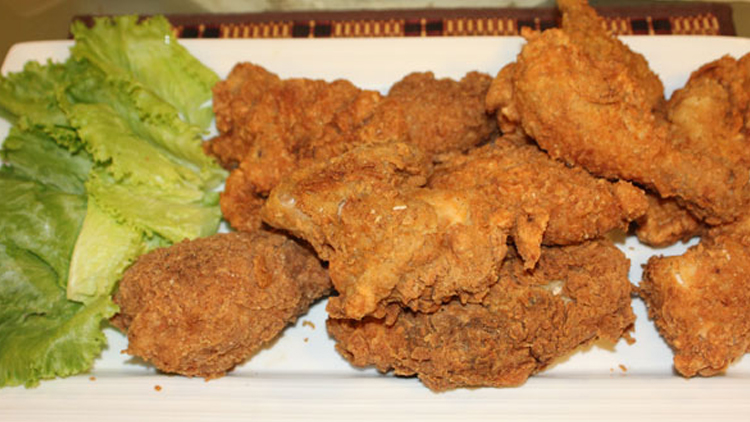

Broast
Recipe
INGREDIENTS
- Chicken (With Skin) 500 grams
- Red Chili Powder 1 tsp
- Vinegar as required
- Chinese Salt 1/3 tsp
- Oil for frying
- Salt to taste
- Eggs 2-3
- For Broast Masala
- All Purpose Flour 1 cup
- Rice Flour ½ cup
- Corn Flour ½ cup
- Chicken Powder 4 tbsp
- Garlic Powder 2 tbsp
- White Pepper Powder 4 tbsp
- Chinese Salt 2 tbsp
- Salt to taste
- For Garlic Sauce
- Cream 1 cup
- Mayonnaise 1 cup
- Garlic Cloves 6-8
- White Pepper Powder ½ tsp
- Chicken Cube 1
- Lemon Juice 2 -3 tbsp
- Salt to taste
METHODS
broast masala:
- take 1 cup of all purpose , ½ cup of rice flour , ½ cup of corn flour, sieve it together.
- Now take a blender add 4 tbsp of chicken powder, 2 tbsp garlic powder, 4 tbsp of white pepper powder,
- 2 tbsp of Chinese salt, add to taste salt and take a air tight box or container
- add all mixture in it and mix it well until all mixture are together.
- Now broast masala is ready.
- For garlic sauce:
- Take 6-8 cloves of garlic boil it and take a blender jug
- Add 1 cup of cream, 1 cup of mayonnaise , boiled garlic cloves add to taste salt,
- Add ½ tsp of white pepper powder, 2-3 tbsp of lemon juice,
- 1 chicken cube mix it well and make a thick paste. Now sauce is ready.
For chicken broast:
- Take a bowl add as required vinegar , add to taste salt, 1 tsp of red chili powder ,
- 1/3 tsp of Chinese salt mix it well and marinate the ½ kg of chicken. Now take a air tight container or box
- Now add chicken pieces one by one coated with broast masala and 2-3 beated eggs coated with eggs
- Now repeat the process on 3-4 times until chicken coated a thick layer.
- Now take a deep wok add oil heat the oil and deep fry the chicken on low flame heat
- Cook cover the lid until its golden brown take it out in a serving platter and serve with sauce.